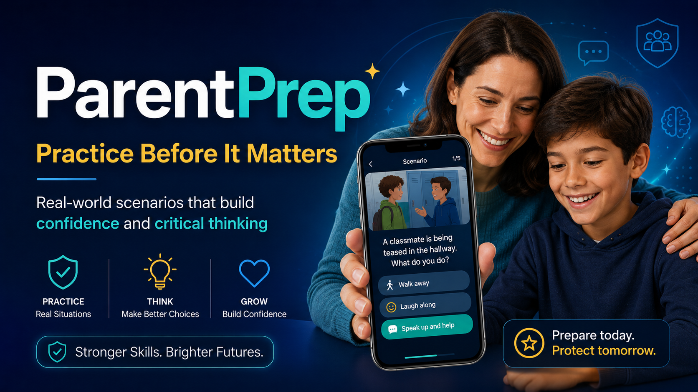

Live Product
ParentPrep
Scenario-based practice that helps kids build confidence and make better decisions in real-life situations.
Problem: Kids are told what to do but rarely get to practice.
Solution: Short scenarios families can discuss together.
View ProductScenarios